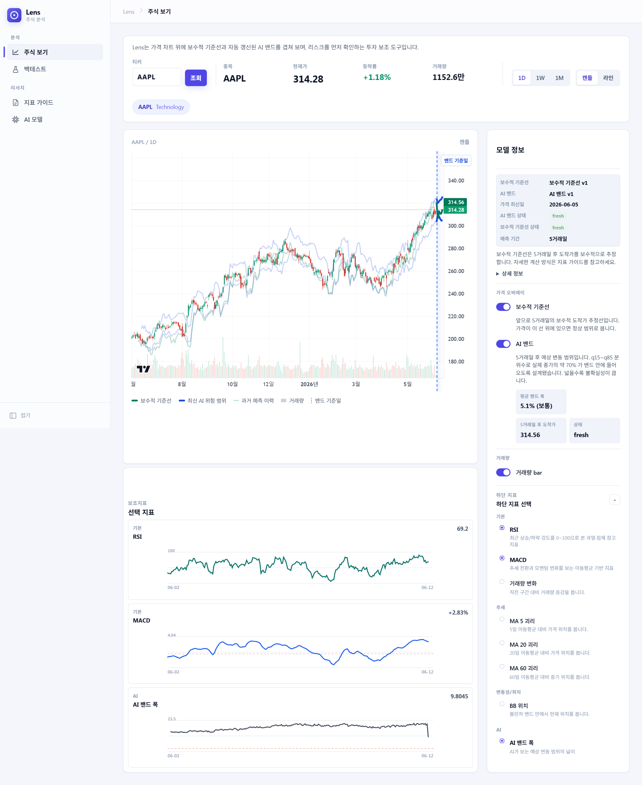
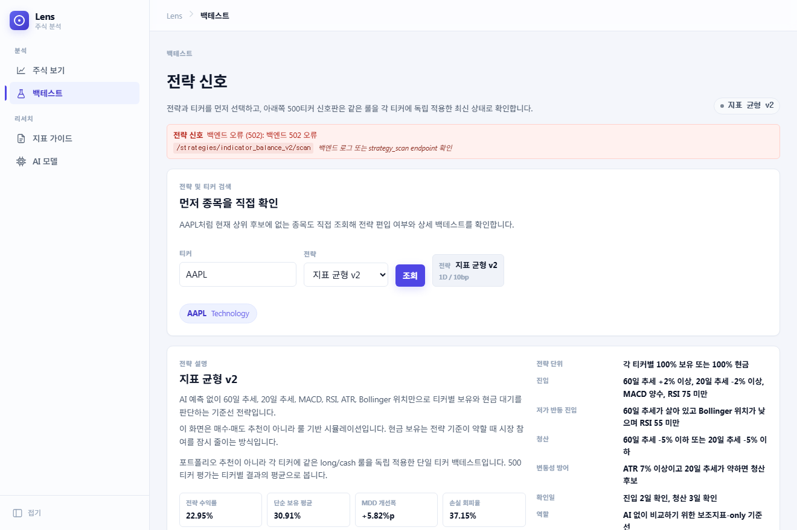
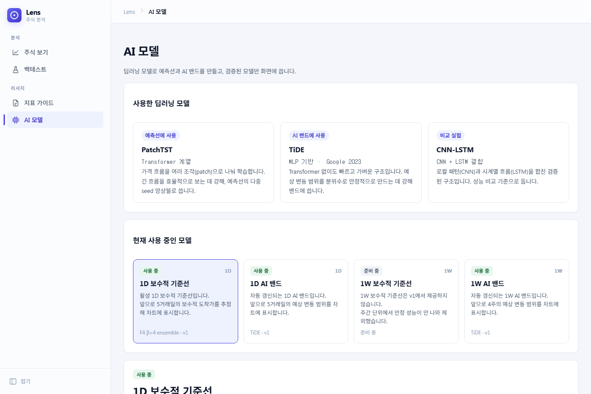
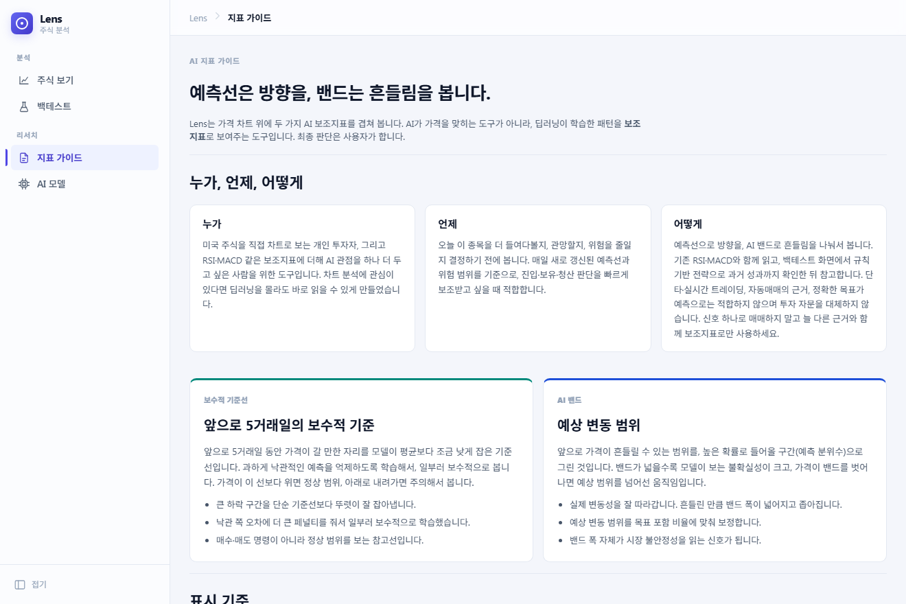

Lens — 계획에서 현재까지의 전체 기록
“AI가 주식을 100% 맞힐 수 있을까? 불가능하다. 그래서 예측 도구가 아니라 보조지표로 쓴다.” 이 한 문장에서 출발해 250개가 넘는 체크포인트를 거쳐 도착한, 운영 3모델과 그 한계까지의 정직한 종합 기록.
01한눈 요약
Lens는 미국 S&P 500 종목의 가격 차트 위에 딥러닝 예측선·예측 밴드와 규칙 기반 시그널을 겹쳐 보여주는 AI 보조지표 도구다. 핵심 산출물은 운영에 실제로 붙은 세 모델이며, 프로젝트의 가장 큰 결론은 “딥러닝이 단순 통계 베이스라인을 이기기는 어렵다”를 자기 데이터로 정직하게 재확인한 것이다.
라인 · 1D 밴드 · 1W 밴드
2026.04 → 06
DM·Bootstrap·GW
회귀 diff 0
운영 3모델 한 줄 요약
| 모델 | 구조 | 핵심 설정 | 통계검정 위치 |
|---|---|---|---|
| 예측선 CP210 | PatchTST 5-seed 앙상블 | 비대칭 Huber 손실 β=4, F4 feature pack, h5(5거래일), 수익률 score | 통계 동등 과거평균·이전모델과 IC 차이 없음(Bonferroni p=1.00) |
| 1D 밴드 CP153 | TiDE 분위수 | q15/q85(목표 70%), lower_focused 보정, true walk-forward | 통계 열위 과거분위수·walk-forward GARCH 못 이김 |
| 1W 밴드 CP178 | TiDE WFLOCK | q10/q90(목표 80%), walk-forward lower 보정 | 통계 우위 walk-forward GARCH 대비 d=−0.98 + 3 regime p<0.001 |
계획서(2026.04) 이후 바뀐 네 가지
① 데이터 — EODHD → 로컬 parquet
유료 EODHD/FMP/FRED 단일 DB 구상에서, yfinance 500 종목 + 로컬 parquet 원천 + 얇은 표시용 DB 구조로 전환. 비용 절감이 아니라 감사 가능한 데이터 마이그레이션으로 수행.
② 평가 — MAPE → IC·coverage·통계검정
“MAPE<5%, 방향정확도>55%, 포함율>90%”라는 단순 목표를 폐기하고, IC·coverage_abs_error·band_width_ic·severe recall + 정식 통계검정으로 교체.
③ DB — Supabase 즉시 → 보류
Supabase PostgreSQL 즉시 사용 계획에서, v1은 로컬 parquet 서빙으로 운영하고 Supabase는 재연결 골격만 준비(결제 후 활성). 무료 티어 메모리 제약을 정면 대응.
④ 결론 — 성과 과장 대신 정직한 한계
“AI가 잘 맞힌다” 대신 “통계 베이스라인을 이기기 어렵다”를 통계검정으로 증명. 유일하게 이긴 1W 밴드의 국면 조건부 우위를 선택적 출력의 근거로 전환.
02프로젝트 정체성 — AI는 예측 도구가 아니라 보조지표
Lens의 모든 설계 결정은 하나의 철학에서 나온다. AI는 “정답을 알려주는 예언자”가 아니라, RSI·MACD처럼 사용자가 함께 보고 판단하는 또 하나의 지표다. 의사결정의 주체는 언제나 사람이다.
예측선 (보수적 기준선)
앞으로 5거래일 수익률을 점으로 예측하되, 위로 틀리는 것(낙관)을 아래로 틀리는 것보다 더 크게 벌하는 비대칭 손실로 학습. “맞히는 선”이 아니라 “덜 위험하게 틀리는 선”.
예측 밴드 (위험 구간)
미래 수익률의 분위수 구간(q15~q85 등)을 직접 예측. “어디까지 떨어질 수 있고 어디까지 오를 수 있는가”라는 calibrated risk interval. Plan v3에서 밴드가 본체로 확정.
규칙 기반 시그널
AI 출력을 기존 보조지표와 조합한 매매 규칙. 예: 밴드 하단 > −5% AND 60일선 위 AND RSI<82 → 추세 추종. 백테스트로 검증.

비대칭 손실 — 보수 철학의 수학적 본체
예측선 정체성의 핵심은 ai/loss.py의 비대칭 Huber 손실이다. 오차를 error = 예측 − 실제로 정의하고, 과대예측(error>0)에는 가중치 β, 과소예측에는 α를 곱한다.
L = α · Huber(error | error ≤ 0) + β · Huber(error | error > 0), (α=1, β=2 → 운영 단계 β=4)
같은 절대오차에서 과대예측에 정확히 β배의 벌점이 간다. 운영 모델 CP210은 낙관을 더 강하게 억제하려 β를 4까지 올렸다. (재현 매니페스트엔 “MSE”로 표기돼 있으나 실제 코드는 δ=1 Huber 기반이다.)
03계획서 vs 현재 — 무엇이, 왜 바뀌었나
2026년 4월 계획서(13장 PPT)는 6주 일정의 깔끔한 청사진이었다. 실제 6주는 그 청사진의 거의 모든 가정을 시험대에 올렸고, 대부분은 “더 정직한 쪽”으로 수정됐다. 아래 표가 그 전모다.
| 항목 | 계획서 (2026.04) | 현재 (2026.06) | 바뀐 이유 |
|---|---|---|---|
| 데이터 소스 | EODHD + FMP + FRED, Supabase 단일 DB 적재 | yfinance 500 종목 → 로컬 parquet 원천 + 얇은 표시용 DB | 개인 운영 비용 + 무료 티어 제약. provider provenance·adjusted OHLC 계약을 검증한 마이그레이션 |
| 데이터베이스 | Supabase PostgreSQL 즉시 사용 | 로컬 parquet 서빙, Supabase 재연결 골격만(결제 후) | Supabase 무료 한도(500MB) + egress 비용. 학교 데모엔 로컬 parquet가 충분 |
| 모델 | PatchTST·CNN-LSTM·TiDE 3종 비교 | 예측선=PatchTST, 밴드=TiDE(1D/1W). CNN-LSTM은 비교용 | 밴드 백본이 CNN-LSTM에서 TiDE로 전환(CP153 model zoo에서 coverage 정확도 1위) |
| 평가지표 | MAPE<5%, 방향정확도>55%, 밴드포함율>90%, 응답<3초 | IC·severe recall·coverage_abs_error·band_width_ic + DM/Bootstrap/GW 통계검정 | 단순 지표는 “밴드를 무한정 넓히면 포함율 달성” 같은 허점. 위험 신호 품질을 재정의 |
| 밴드 포함율 | > 90% | 1D 70%(q15~85), 1W 80%(q10~90) | 5거래일에 90% CI는 너무 넓어 실용성 저하. 좁히되 정직하게 기록 |
| 일정 | 4/21~6/01, 6주 (DB→수집→모델→API→프론트→통합) | 6/06+ 진행 중, 250+ CP의 반복 실험 | 모델이 통계 베이스라인을 못 이기는 현실을 마주하며 실험·검증이 크게 확장 |
| 응답속도 | < 3초 목표 | 실측 라인 9ms / 1D 밴드 27ms / 1W 10ms | 로컬 parquet 인메모리 캐시 서빙으로 목표를 두 자릿수 ms로 초과 달성 |
| 결론 프레이밍 | “AI 보조지표로 의사결정 지원” | 좌동 + “ML은 통계 베이스라인을 이기기 어렵다”를 통계로 증명 | Welch-Goyal·Makridakis 통설과 일치. 정직성을 핵심 가치로 |
β 하드코딩 → β 스윕 → β=4 앙상블 (정체성 변경의 핵심). 계획서는 보수성을 정하는 비대칭 손실 가중을 α=1·β=2로 손으로 박아뒀다. 그러나 “보수성의 정도를 사람이 임의로 고정하는 것”이 자의적이라 판단해, β를 더 높은 보수성 방향으로 스윕했고 그 결과 β=4 5-seed 앙상블(CP210 F4 b4)이 채택됐다. 단순 하이퍼파라미터 튜닝이 아니라 ‘예측 정확도’에서 ‘낙관 억제 = 리스크 인식’으로 모델의 무게중심을 옮긴 결정 — 계획서엔 없던 정체성의 구체적 이동이다.
04시스템 아키텍처 — 세 계층과 parquet 경계
핵심 설계 원칙은 “무거운 연산은 전부 오프라인에서 끝내고, 운영 백엔드는 미리 만든 parquet 스냅샷만 읽는다”는 read-only 분리다. 덕분에 Render 무료 티어(512MB)에서 GPU·학습 의존성 없이 동작한다.
데이터 흐름
backend/collector — EODHD/yfinance OHLCV + 재무·거시·섹터. sources → jobs → pipelines(daily_sync) → repositoriesfeature_calculator — RSI·MACD·볼린저·ATR·MA비율 + regime·context. 학습과 서빙이 같은 feature_svc를 재사용해 train-serving skew 차단ai/train — PatchTST·TiDE·CNN-LSTM 멀티헤드 → checkpoints/*.pt. 비대칭/Pinball 손실, 캘린더 분할, 평가ai/inference + band_calibration → 예측 산출 (분위수 밴드 후처리 보정 포함)backend/scripts — line_export·band_refresh·history_rebuild → backend/data/v1/*.parquet (서빙 스냅샷)backend/app (FastAPI) — parquet_store / local_market_svc 가 parquet을 메모리 캐시 후 JSON 응답frontend/src — axios 클라이언트 → lightweight-charts 캔들 위 예측선·밴드 오버레이세 계층의 구성
백엔드 backend/
- app/routers/v1 — health·stocks·predictions·ai·strategies·admin (얇은 HTTP 경계)
- app/services — parquet_store(공유 캐시)·local_market_svc·product_history_svc·feature_svc(4모듈)·strategy_backtest_svc(3모듈)
- app/config — Pydantic Settings 5도메인
- collector/ — sources→jobs→pipelines→repositories
- scripts/ — AI 산출물→parquet 익스포트 브리지
- data/v1/ — 운영 parquet 스냅샷
AI ai/
- models/ — patchtst·tide·cnn_lstm (공통 멀티헤드 출력 계약)
- preprocessing — 백엔드 feature_svc 재사용 → SequenceDataset
- train·loss·splits·targets — 학습 루프·Pinball·누수없는 분할
- inference·band_calibration — 추론·분위수 보정
- eval/significance — DM·GW·Bootstrap·GARCH walk-forward
- torch_bootstrap — Windows/GPU 환경 고정
프론트 frontend/src/
- components — StockView·BacktestView·TrainingView·ReportView + AppShell
- api — baseClient(axios) + endpoints + types (facade)
- lib — backtest·training·stock·chart 도메인 분리
- app/styles — 13개 CSS 뷰별 모듈화
- predictionOverlay·staleness·formatters
feature_svc 하나로 공유해 skew를 차단하고, parquet read 경계마다 pandera dtype 계약과 메모리 압축(category·float32)을 적용해 무료 티어 OOM과 dtype 회귀를 동시에 막는다.05데이터 인프라 진화 — EODHD에서 로컬 parquet까지
이 영역의 서사는 “무료 데이터로 갈아탔다”가 아니라 “모델 입력의 원천을 감사 가능하게 옮겼다”이다. 데이터 계약을 모델 성능보다 먼저 고정한다는 원칙이 관통한다.
1단계 — 데이터 길이 위기와 feature 계약 (CP2.5 → CP2.6)
AAPL처럼 10년치가 확실한 종목의 학습 가능 행이 1D 753행(목표 ≥2200)에 불과했다. 수정 금지 조사 CP로 원인을 3가설 중 숫자로 확정한 결과, 병목은 가격이 아니라 컨텍스트 테이블 결측이 feature를 통째로 dropna시킨 것이었다(신용 스프레드는 2023-04부터, market breadth는 2016-04부터 시작). 컨텍스트 결측을 dropna 사유에서 빼고 has_macro/has_breadth 플래그 + 0 대체로 바꾸자 AAPL 1D가 753 → 2784행으로 회복. “데이터 계약” 개념이 처음 등장한 지점.
2단계 — indicator 백필과 adjusted OHLC 계약 (CP44 → CP64)
atr_ratio가 계산식은 있는데 출력 컬럼에서 빠져 DB에 0건이었다. 공식 경로로만 재계산해 non-null을 0 → 164만 행(전 row 100%)으로 채웠다. 더 중요한 건 raw OHLC와 adjusted 기준 계산물이 섞인 과거 row를 prune하고 adjusted OHLC v3 계약(adjusted_close/close factor로 OHLC 통일)을 확립한 것 — 이 계약이 이후 provider 전환의 핵심 잣대가 됐다.
3단계 — provider 전환: EODHD → yfinance (CP86 → CP96)
가격 수집에 provider 추상화 계층을 넣고 yfinance를 primary, EODHD를 fallback으로 뒀다(코드 삭제 아님). yfinance를 가능케 한 핵심은 Lens feature 계약이 DB raw를 직접 먹지 않고 adjusted OHLC를 재구성하기 때문 — provider의 raw close가 달라도 adjusted 재구성이 정상이면 모델 계약은 유지된다.
source/provider/policy 컬럼 추가, ② data fingerprint(hash)에 provider/policy 반영 → provider 다르면 같은 종목·날짜라도 hash가 달라짐, ③ feature cache 옆 manifest로 mismatch 시 재사용 거부. “provider를 바꿔도 어느 데이터로 학습했는지 추적 가능”을 보장.4단계 — Supabase 창고 → 로컬 parquet 원천 (CP98 → CP117)
Supabase 무료 한도와 egress 비용 압박으로, 저장 구조를 “Supabase 단일 창고”에서 “로컬 parquet 원천 + 얇은 표시용 DB”로 옮겼다. LENS_DATA_BACKEND=local + bulk read guard로 Supabase 대량 read를 차단하고, 제품 예측은 latest-only thin upload만 허용. EODHD-off 최종 리허설(CP116) PASS로 EODHD 해지 가능 판정.
5단계 — 500 종목 확장을 위한 EODHD 복귀 (CP132 → CP146)
반전: 100종목 로컬 루프가 완성됐지만 두 한계가 드러났다. ① full_features 컨텍스트가 0-fill되어 “시장 지표 활용”이라 말할 수 없었고(WARN), ② 500종목 풀 데이터셋을 받으려니 yfinance가 rate limit(429)에 걸렸다. 그래서 EODHD를 병렬 부트스트랩으로 다시 소환하되 provider별 dataset을 끝까지 분리(split 정책이 경계일에서 섞이는 것 방지). EODHD 500 부트스트랩 1,387,834행, 실패 0으로 풀 학습 데이터셋을 확보했다.
| 구간 | CP | 핵심 사건 | 결과 |
|---|---|---|---|
| 데이터 복구 | 2.5→2.6 | 컨텍스트 결측이 feature를 dropna시킨 병목 규명 | 753→2784행 |
| indicator 백필 | 44→64 | atr_ratio 백필 + stale row prune + adjusted OHLC v3 | 0→164만 행 |
| provider 전환 | 86→96 | yfinance primary, EODHD fallback, source-aware split | 3겹 방어선 |
| 저장 전환 | 98→117 | Supabase 창고 → 로컬 parquet 원천 + 얇은 DB | EODHD 해지 가능 |
| 500 확장 | 132→146 | 0-fill 발견, EODHD 병렬 부트스트랩, 풀 학습 | 503종목 데이터셋 |
06모델 실험 — 라인·밴드 계보
라인과 밴드는 같은 실험·평가 파이프라인(그림 2)을 돌며 수렴했다. 라인은 PatchTST에서 F4 β=4 앙상블로, 밴드는 CNN-LSTM에서 TiDE 분위수로 전환됐다. 아래 한 흐름 안에서 라인·밴드 계보를 차례로 본다.
라인 계보 — PatchTST의 진화
모델을 늘리는 게 아니라 줄이는 단계. TiDE·CNN-LSTM을 동결하고 PatchTST 하나만 논문 기준으로 재정렬. “성능보다 먼저 지표가 실험 축을 따라 일관되게 움직이는지”를 본다는 원칙 수립.
50종목에서 멀쩡하던 밴드 calibration이 100·200종목으로 가며 coverage 0.89→0.46으로 붕괴. 진단: val_total 기준 best와 coverage 기준 best가 다르다 → coverage-aware checkpoint 도입.
이전 판단이 전부 오염 피처(v2) 기준이었음을 인정하고 재검증 → 기존 후보 전부 탈락(validation IC는 양수인데 test fee는 음수). RevIN을 꺼봐도 해법이 아니었다. “밴드 보정으로 라인을 살리는” 경로의 막다른 길.
보수 라인 전용 지표(false_safe_rate, severe_downside_recall) 도입. h5 longer_context(p32/s16)가 일반 라인 최선. 교훈: 하나의 지표(IC)로 후보를 살리면 안 된다, 보수성과 알파는 trade-off.
학습으로 안 되니 post-hoc offset으로 라인을 내림. 핵심 용어 계약: trained_conservative_line(학습 보수성)과 display_calibrated_line(표시 보정)을 엄격히 구분.
단순 hp 튜닝(dropout/lr)이 false-safe 개선에 실패 → feature 인지 문제로 재정의. stress_delta(C: atr·vix·credit·ma200)가 IC 보존, 개별 종목 취약성(D)이 하방 안정. 3-seed 재평가에서 D는 단일 seed 착시로 무너지고 C가 primary.
F4_stress_delta_plus_yield_curve(C + 금리곡선) lock. β=4로 낙관 억제 강화, 5-seed(7/13/23/42/71) 앙상블. 단 walk-forward IC range 0.0457 > 0.040으로 ship 판정은 NO_SHIP — 그럼에도 운영 채택하며 “WF 안정성 moderate”로 정직하게 기록.
밴드 계보 — TiDE 분위수 밴드
Plan v3에서 밴드가 본체로 확정됐다. 계보의 줄기는 Bollinger 기준선 → PatchTST 분위수 → TiDE 전환 → conformal 보정 → true walk-forward → 1D/1W 운영 lock이다. 밴드 백본이 CNN-LSTM에서 TiDE로 갈아탄 것이 가장 큰 전환점이다.
핵심 전환점
- 과보수의 함정 (CP22) — 분위수 밴드는 방치하면 coverage 1.0의 무의미한 폭이 된다. q 압축 + λ로 좁혀야. 이때 “밴드를 좁히면 upper breach가 lower보다 빨리 터진다”는 구조적 비대칭 관찰 → 후일 lower_focused의 근거.
- 후처리 보정의 한계 (CP38) — scalar/conformal 보정은 폭 문제는 고치나 분포 중심 이동은 못 고친다. validation coverage 0.82가 test 0.59로 무너진 TiDE를 단순 보정으로 못 살림.
- fair baseline의 냉정함 (CP55) — 통계 baseline이 강해 “AI가 직접 lower/upper 예측”의 우위가 작다. feature 정리·백본 재탐색으로 선회.
- 백본 전환 (CP153 stage2) — 8개 백본 경쟁에서
tide_s104_q15가 coverage 오차 0.020으로 1위, CNN-LSTM은 2위로. CNN-LSTM→TiDE 전환. - replay ≠ true walk-forward (CP153 5→5T) — 같은 체크포인트 재대입(replay)은 미래 누수. fold마다 fresh 학습 + validation-only 보정만이 진짜 OOS.
왜 lower_focused 인가
Stage 3에서 네 갈래 보정(raw / scalar_width / lower_focused / separate_scale)을 비교했다. raw·symmetric은 coverage를 맞추려 양쪽을 같이 넓혀 upper까지 부풀려 interval score가 나빠진다. lower_focused는 upper를 고정한 채 lower만 보정해, upper_breach를 0.176에 묶고 lower_breach만 0.166→0.028로 조이며 coverage 오차 최저점(0.0104)을 만든다.
최종 운영 산출물 (lock 상태)
| 항목 | 1D 밴드 (CP153) | 1W 밴드 (CP178-WFLOCK) |
|---|---|---|
| 백본 / 분위수 | TiDE · q15/q85 (목표 70%) | TiDE · q10/q90 (목표 80%) |
| 보정 | lower_focused (validation-only) | walk-forward lower calibration |
| coverage_abs_error | 0.0099 (save-run) / 0.0254 (5T 평균) | 0.039 |
| band_width_ic | 0.376 | 0.34 |
| lower / upper breach | 0.159 / 0.151 | 0.118 / 0.117 |
| 검증 | Stage 5T true WF (3 fold × 3 seed) | Stage 5 true WF + WFLOCK |
※ 1W는 strict 1W 기준으론 탈락이지만 1D와 동일한 대칭 기준을 적용하면 product candidate가 된다 — “1W가 1D보다 어렵다는 이유로 더 엄격한 잣대를 들이댔을 뿐”이라는 게 채택 논리. 실제로 1W의 lower breach(0.118)는 1D(0.143)보다 오히려 낮다.
07평가 철학 — 점예측에서 리스크·전략 가치로
계획서의 합격 기준(MAPE<5%, 방향정확도>55%, 포함율>90%)은 “AI가 가격을 잘 맞히는가”를 묻는다. 그런데 Lens가 실제로 파는 것은 “맞히기”가 아니라 “위험을 일관되게 신호하기”다. 이 간극이 지표 재설계의 출발점이다.
왜 단순 지표가 무너졌나
MAPE → 폐기
예측선은 가격 절대값이 아니라 수익률 score라 MAPE가 의미 없다. 실제 코드엔 mape 자체가 없고 smape만 보조로 남았다.
방향정확도 → 보조
코드에 남았지만 본 판정은 IC(순위 상관)와 long-short spread로 넘어갔다. 방향만 맞히는 것으로는 위험을 못 잡는다.
포함율 90% → coverage_abs_error
밴드를 무한정 넓히면 포함율은 그냥 달성된다. 그래서 “목표 coverage 대비 오차”와 “폭이 실제 위험과 동조하는가(band_width_ic)”로 교체.
지표 재설계 4부작 (CP51 → CP54)
지표를 line/band/composite 3계층으로 분리하고 신규 지표를 대거 추가했다: coverage_abs_error, lower/upper_breach_rate, median/p90 band_width, asymmetric interval score(하방 penalty 2.0 > 상방 1.0), band_width_ic(폭 vs 실제 변동성 순위상관), downside_width_ic, ic_t_stat·spread_t_stat(통계 안정성), severe_downside_recall(P(score<0 | 실제 ≤ train q10)).
역할 분리 원칙
CP37에서 line_gate / band_gate를 분리했다. 밴드 모델은 순위 예측력(IC)으로 평가하지 않고, 라인 모델은 coverage로 평가하지 않는다. ai/evaluation.py는 총 109개 지표를 정의하지만 운영 판정에는 핵심 12개만 쓴다 — 계획서의 MAPE·방향정확도는 그 12개에 없다.
정량을 넘어 — 모델이 “전략에 도움 되나” (백테스트)
위까지는 모델이 잘 맞추나(정량 예측력)를 본다. 그러나 Lens가 답해야 할 마지막 질문은 “그 신호가 실제 매매에 도움 되나”이고, 이건 백테스트로만 답한다. 그래서 평가를 세 층으로 본다 — 마지막 두 층이 v1에서 약했던 부분이고, 백테스트로 채운다.
① 정량 — 예측력
IC·severe recall(라인), pinball·coverage_abs_error·band_width_ic. “모델이 통계적으로 잘 맞추나.”
② 백테스트 — 유용성
AI 지표를 전략에 끼웠을 때 ΔCalmar·ΔSortino·ΔMDD·대형손실회피. “리스크 관리에 실제로 도움 되나” — 정성적 질문에 정량적 근거.
③ 정성 — 해석·정직성
lagging↔leading 해석, regime 행동, “저장된 평가 없으면 성능 주장 안 함” 원칙. 숫자가 못 잡는 판단.
08통계적 유의성 검정 — 정직한 결론
운영 3모델을 베이스라인과 정식 통계검정으로 비교했다. 핵심 결론을 먼저: ML이 단순 통계 베이스라인을 이기는 일은 어렵고, Lens도 그 통설에서 자유롭지 않았다. 다만 1W 밴드 한 곳에서만 명확한 우위를 확보했고, 그 우위가 시장 국면에 조건부로 체계적이라는 점이 선택적 출력의 근거가 됐다.
예측선 · CP210
과거 평균·이전 모델과 IC 차이 없음 (Bonferroni p=1.00). 앙상블의 추가 가치가 통계적으로 확인되지 않았다.
1D 밴드 · CP153
단순 분위수(d=0.93)·walk-forward GARCH(d=0.45)를 못 이김. 볼린저에만 우위.
1W 밴드 · CP178
walk-forward GARCH 대비 d=−0.98 + GW 3 regime p<0.001. 유일한 명확한 우위.
검정 도구 4종 + 보정
Diebold-Mariano
두 손실 시계열 차이의 예측력 동등성 검정. HAC(Newey-West) 분산으로 자기상관 보정.
Bootstrap CI
cluster(종목 복원추출)+block(시간 √T) 두 방식 ×1000회. 둘 다 0을 안 걸치면 강한 결론.
Giacomini-White
국면(VIX>30, drawdown)에 손실 차이가 조건부로 의존하는지 Wald 검정.
효과크기 + 보정
거대 표본 p-hacking 함정 방어 — Cohen's d + CI + Bonferroni를 항상 병기.
결과 ① 예측선 CP210 (IC, 높을수록 좋음)
← 우위 | 중앙 = 동등 | 열위 → (Cohen's d · 둘 다 0 근처 = 동등)
| 베이스라인 | mean diff | Cohen's d | Bonferroni p | 결론 |
|---|---|---|---|---|
| 과거 평균 (historical_mean) | +0.0081 | +0.12 | 1.00 | 통계 동등 |
| 이전 모델 동결 (cp175 β=5) | −0.0027 | −0.07 | 1.00 | 통계 동등 |
5-seed 앙상블의 IC가 과거 평균이나 이전 frozen 모델과 통계적으로 다르지 않다(p=1.00). 점추정 순위가 아니라 통계 판정이 결론.
결과 ② 1D 밴드 CP153 (pinball, 낮을수록 좋음)
← 우위 | 중앙 = 동등 | 열위 → (Cohen's d · pinball, 낮을수록 좋음)
| 베이스라인 | Cohen's d | Bonferroni p | 결론 |
|---|---|---|---|
| 볼린저 | −1.97 | <0.001 | 통계 우위 |
| 과거 분위수 (historical_quantile) | +0.93 | <0.001 | 통계 열위 |
| 정적 GARCH | +0.24 | 0.500 | 통계 동등 |
| walk-forward GARCH | +0.45 | <0.001 | 통계 열위 |
공정성 보강 후에도 1D 밴드는 단순 분위수·walk-forward GARCH를 못 이긴다. 1차에서 d=1.28이던 게 0.93으로 줄었지만 여전히 열위 → “약점은 baseline 부풀림이 아니라 진짜”.
결과 ③ 1W 밴드 CP178 (pinball, 낮을수록 좋음) — 유일한 명확한 우위
← 우위(좋음) | 중앙 = 동등 | 열위(나쁨) → (Cohen's d, 모두 Bonferroni 보정)
1W 밴드는 단순 분위수·정적 GARCH엔 지지만, 공정하게 보강한 walk-forward GARCH 대비 d=−0.98(large)로 통계적 우위다. 운영 3모델 중 딥러닝이 강한 통계 베이스라인을 명확히 이긴 유일한 지점.
결과 ④ Giacomini-White 국면 조건부 (1W vs walk-forward GARCH)
| Regime | β | Bonferroni Wald p | 해석 |
|---|---|---|---|
| VIX > 30 (고변동) | +0.0065 | <0.001 | 손실 차이가 국면에 체계적 의존 |
| drawdown ≤ −10% | +0.0104 | <0.001 | 하락장에서 1W 밴드에 유리 |
| combined | +0.0080 | <0.001 | stress 국면 선택적 출력 근거 |
09프론트엔드 — “연구 콘솔”에서 “주식 앱”으로
초기엔 모델 선택·target type이 뒤섞인 연구자용 대시보드였다. 제품 트랙의 두 원칙 — “모델 성능과 무관하게 발표 가능한 제품 루프를 먼저 닫는다”, “첫 화면은 논문이 아니라 주식 앱처럼 보인다” — 에서 세 화면 체제가 나왔다.



StockView — 종목 분석
가격 차트 + 예측선·밴드 오버레이 + 토글 가능한 보조지표 패널(RSI·MACD·볼린저·ATR + AI 밴드폭·하방위험). 빈/에러 상태를 제품 언어로 흡수. 1W 전환 시 차트가 죽던 정렬 버그(CP79)를 공통 방어로 해결.
BacktestView — 전략 실험
포트폴리오가 아니라 단일 종목 룰 기반 전략 실험으로 못박음. lookahead 누수 차단. 기본 전략을 과방어적 Risk Guard에서 Trend Guard로 자가 교체(현금 대기 과도가 신뢰 저하). 수익률보다 최대낙폭·손실회피율을 위에 배치.
TrainingView — AI 모델
디버그 덤프 → 목표 대비 평가 → 실험 비교 리포트 → 모델 설명 페이지로 단계 성숙. 4개 제품 슬롯 + 통계검정 표 + 재현 매니페스트. 저장된 평가가 없으면 성능을 주장하지 않는다.
patchtst-1D-...)는 제품 언어(예측선 모델 v1)로 치환하되 검수용 원문은 접힘 영역에 보존 · 못하는 것은 정직하게 표시한다(예: 위험 오판율 39.3%, 목표 25% → “개선 필요”).10코드 안정성 리팩토링 (CP221 → 237) — 완료
계획서엔 없던 현업 수준 정비 트랙. 철학은 명확하다 — “동작 보존을 기계가 증명할 안전망을 먼저 박고, 그 위에서만 구조를 건드린다”(Feathers/Fowler 정합). 절대 규칙: 백엔드 snapshot 그린 전 분리 금지, 프론트 screenshot 그린 전 분리 금지.
Phase A — 안전망 우선 구축
- CP222 — ruff·mypy·pytest·pre-commit 도구 도입(소스 0줄 변경). baseline 박제: pytest 361 passed(실패 21은 전부 pre-existing), ruff 2155건·mypy 1391건을 수정 없이 기록. 운영 parquet SHA256 세션 가드 신설.
- CP223 — 백엔드 characterization: 9개 read-path endpoint를 syrupy 스냅샷으로 박제(1.55MB). 운영 코드 0줄. 이게 이후 모든 백엔드 분리의 “1바이트 불변” 증명 도구.
- CP230 — 프론트 characterization: Playwright 4화면 screenshot baseline + Vitest 순수함수 107 passed.
Phase B — 거대 파일 분리 (facade 패턴, diff 0)
모든 분리는 같은 패턴: 옛 코드 옆 새 모듈 공존 → caller 이전 → 옛 정의 제거 → facade(re-export)로 인터페이스 보존. 매 단계 snapshot/screenshot diff 0으로 가드.
| CP | 대상 | 줄 수 | 회귀 |
|---|---|---|---|
| 225 | feature_svc.py → 4모듈 + facade | 619→106 | snapshot diff 0 |
| 226 | strategy_backtest_svc.py → 3모듈 + facade | 659→148 | lru_cache 보존, diff 0 |
| 231 | BacktestView.tsx → 4모듈 | 1547→839 | Vitest 107→152, screenshot 0 |
| 232 | TrainingView.tsx → 8모듈 | 1461→940 | 통계 섹션 글자 단위 복제, diff 0 |
| 233 | StockView.tsx 부분 분리 | 1041→925 | Vitest 152→166, diff 0 |
| 234 | globals.css → 13파일 분리 | 5208→0 | screenshot 4 diff 0 (12 step) |
Phase C·D — 백엔드 안정성 + 청소 + DB준비 + CI
- CP227 admin 민감정보(traceback) 제거 + pandera 5종 데이터 계약 · CP228 structlog + request_id 전파 · CP235 Pydantic Settings 5도메인 일원화 · CP229 async 안전성 감사(소스 0줄, 정적 가드만)
- CP224a/b requirements 핀 + dead code 제거(grep 확정분만) · CP236 Supabase 재연결 골격(실연결 보류) · CP237 GitHub Actions CI
11보안 트랙 (CP238 → 242) — 설계 완료, 실행 대기
OWASP Top 10(2021) 중 v1 적용 가능 항목의 baseline을 박는 계획. 현재 상태는 “명세만 작성, 코드 미실행” — 보안 코드 파일·ADR·CI job이 아직 없다. 보고서에선 완료가 아니라 “설계된 점검 항목”으로 정확히 기술한다.
| CP | OWASP | 점검 대상 | 설계된 산출 |
|---|---|---|---|
| 238 | A06 취약 의존성 | CVE 미점검 | pip-audit + npm audit + CI 2 job + Dependabot |
| 239 | A02 암호화 실패 | git history secret 미검사 | gitleaks 전체 history 스캔 → 발견 시 rotation 우선 |
| 240 | A05 오설정 | 보안 헤더 0(추정) | HSTS·CSP·X-Frame 등 5종 (lightweight-charts 호환 CSP) |
| 241 | A03 인젝션 | 입력 검증 0 | ticker/query Pydantic 검증 + Query 상한 + negative test |
| 242 | A04/A05 | CORS/rate limit | production CORS * 금지 + slowapi 60/min + OWASP 매핑 |
12운영 자동화 · 재현성
v1을 “매일 도는 제품”으로 만드는 자동화와, “누구나 다시 만들 수 있게” 잠그는 재현 매니페스트.
일일 자동 refresh 파이프라인 (CP212)
윈도우 작업 스케줄러가 PC 기동 시 통합 refresh를 실행: append(yfinance) → market_snapshot → band_refresh → line_refresh → product_history → ai_runs → git push. 정책상 새 학습·calibration·DB write 없음, 라인은 F4 β=4 앙상블 체크포인트로 최근 구간만 재계산. Render/Vercel은 git push를 받아 production을 갱신한다.
① 백엔드 503 (메모리 초과): 종목 상세를 열면 product_history 78만 행이 lru_cache로 상주하며 331MB를 점유 → Render 무료 512MB OOM → 재시작 → 503. dtype 다이어트(category+datetime64+float32)로 331MB → 22MB(93%↓) 수정, 회귀 0.
② 예측 정체 (라인·밴드가 6/3에 멈춤): CP235가 심은 from app.config 절대 import가 refresh 스크립트 실행 컨텍스트에서 ModuleNotFoundError를 일으켜 band/line refresh가 동반 실패 → market/product만 갱신된 채 push되던 사고. 상대 import로 복구 + unified 스크립트에 단계 실패 시 push 차단 게이트 추가. band/line dry-run 모두 asof 6/5 도달 확인.
재현 매니페스트 (CP220)
| 항목 | 값 |
|---|---|
| Python / torch | 3.10.0 / 2.x+cu128 |
| GPU | RTX 5060 Ti · sm_120 (일반 휠에 없어 nightly/자체 빌드 필요) |
| 환경변수 | KMP_DUPLICATE_LIB_OK=TRUE · TORCHDYNAMO_DISABLE=1 · num_workers=0 |
| 데이터 / feature | yfinance S&P 500 · v3_adjusted_ohlc |
| source hash | 라인 11bf3a48... · 1D 밴드 90666b44... |
| seeds / folds | 라인 7/13/23/42/71 (4-fold) · 밴드 7/42/123 (3-fold) |
13남은 과제
① DB 연결 (Supabase)
계획서의 Supabase는 현재 골격만(CP236a~d). 결제 후 caller 이전 + 실연결 + Alembic 마이그레이션. PgBouncer 6543 트랜잭션 모드 함정 회피(직접 5432) 등은 ADR-0013에 이미 설계됨. DB로 가면 parquet 메모리 문제(§12 503) 자체가 사라짐.
② 보안 트랙 실행
CP238~242 설계를 실제 코드로. 의존성 audit, gitleaks history 스캔 + secret rotation, 보안 헤더 5종, 입력 검증, CORS/rate limit. 안전망(snapshot/screenshot)은 재사용 가능.
③ 리팩토링 후속
mypy 1391 baseline 정리 → CI fail-on-error · StockView 메인 로직 분리(useStockLoader hook) · Playwright CI strict화 · pre-existing pytest 19 fail 정리.
④ v2 방향
미래 예측성 + XAI 2축. 밴드를 더 살려 전통 통계(GARCH)를 stress 국면에서도 이기기, regime-conditional 밴드 v2, 모델 카드/매니페스트 자동화. 라인의 정확도 야망은 정리하고 “위험 신호” 역할에 집중.
14정직한 결론과 다음 계획의 토대
Lens가 6주에 증명한 것은 “AI가 주식을 잘 맞힌다”가 아니다. 그건 처음부터 가능하지 않다고 선언했다. 증명한 것은 “주장하기 전에 검증하는 방법”이다.
세 가지 핵심 교훈
- 작은 표본·오염 피처·단일 seed의 좋은 결과는 거의 다 착시였다. 확장·clean feature·multi-seed에서 무너졌고, 이걸 매번 정직하게 인정한 것이 진짜 진전이었다.
- 단일 지표(IC, 포함율)로 모델을 살리면 안 된다. 위험을 일관되게 신호하는가는 여러 축(순위·calibration·폭-변동성 동조·하방 recall)으로만 잡힌다.
- 베이스라인을 공정하게 만드는 것이 결론의 신뢰도를 가른다. GARCH in-sample 누수를 walk-forward로 고치자 1D는 여전히 졌지만, 1W의 진짜 우위가 드러났다.
다음 계획을 세울 때의 출발점
살릴 것
밴드(특히 1W의 regime-conditional 우위) · 통계검정 인프라 · 로컬 parquet 서빙의 속도 · 안전망(snapshot/CI).
정리할 것
라인의 정확도 야망(위험 신호 역할로 한정) · composite 모델(이미 legacy) · 단순 지표 목표(MAPE 등).
새로 갈 것
DB 실연결 → 메모리 제약 해소 · 보안 트랙 실행 · v2 미래 예측성/XAI · 매니페스트 자동화로 재현성 완성.
Lens 종합 보고서 · 작성 2026.06 · 22011859 김지형 · 세종대 데이터사이언스 딥러닝실습
본 문서는 계획서 PPT(2026.04)와 CP2.5~CP242 기록, 운영 매니페스트, 통계검정 결과(cp216_2_significance)를 시간순으로 종합한 것이다. 모든 수치는 실제 산출물에서 인용했다.
15v2 로드맵 — 다음에 만들 것
v1을 마무리하며 정리한 v2 방향이다. 머릿속에만 흩어져 있던 구상을, 나중에 내가 다시 펴 봐도 바로 이어갈 수 있도록 기록해 둔다. 각 항목에 “지금 가진 것 / 현업 표준 / 정해야 할 것”을 적었다.
정체성 전환 — “예측”에서 “리스크 인식”으로
v1에서 가장 크게 배운 것은 라인 IC ~0.04가 약하다는 사실이고, 이건 내 모델의 결함이 아니라 시장 효율성의 본질이다 — 누구도 IC 0.2를 못 낸다(TradingView·Bloomberg도 “예측 정확도”로 팔지 않는다). 그래서 v2의 정체성은 “맞히는 도구”가 아니라 “위험을 먼저 보는 도구”로 굳힌다. 약한 IC를 약점이 아니라 “과신하지 않는다”는 정직함의 강점으로 둔다. 제품 성공 기준도 정확도(IC)가 아니라 신뢰도·UX·차별화된 인사이트로 옮긴다.
① Conformal
“이 범위에 X% 확률” 수학적 coverage 보장 (Vovk·Romano)
② CBM 설명가능
“왜 위험한지” concept 단위 설명 (Koh 2020)
③ Selective output
확신 없으면 침묵 — 과대예측을 하지 않는다
④ LLM 리스크 브리핑
가격+뉴스+8-K → 자연어 요약. 기존 제품에 거의 없는 축
→ 목표 정체성: “가장 정직하고 설명 잘하는 리스크 도구” — 학술·제품·포트폴리오를 동시에 충족.
제품 구조 로드맵 (Stage 0 → 5)
“구조적으로 필요한 만큼”만 키운다 — daily batch 리스크 도구 정체성에 맞게. 단계마다 학습 포인트가 따라온다.
| Stage | 내용 | 학습 포인트 | 상태 |
|---|---|---|---|
| 0 현재(v1) | PC inference → git push → Render(parquet) → Vercel | — | 완료 |
| 1 데이터 레이어 | Supabase Pro(Postgres+Auth) + 캐싱 + 증분 업데이트. parquet 탈피 + .git 1.4GB 정리 | DB schema·ORM·캐싱·Auth flow | 최우선 |
| 2 inference 클라우드화 | 윈도우 PC → Docker → Modal/GitHub Actions cron (PC 안 켜도 자동) | Docker(환경 재현)·serverless·아티팩트 버전 | v2 |
| 3 제품 기능 | 워치리스트·알림(위험 진입)·포트폴리오·LLM 리스크 브리핑 | 상태관리·webhook·백그라운드 큐 | v2 |
| 4 관측·신뢰성 | Sentry + drift 모니터(rolling IC) + uptime | 모니터링·ML 관측(evidently) | 운영 시작 시 |
| 5 스케일 | CDN·다중 인스턴스·실시간 | — | 당분간 불필요 |
① 멀티 자산 확장 + MLOps 플랫폼화
현재는 S&P 500 주식 단일, 수동 PowerShell 오케스트레이션이다. v2 비전은 자산군 추상화 — 코스피·금·채권·ETF·비트코인까지 같은 밴드/라인 파이프라인을 재사용하는 것.
지금 가진 자산
- provider 추상화 + adjusted OHLC 계약(자산 추가의 토대)
- feature_svc를 학습/서빙이 공유(skew 차단)
- W&B 실험 추적 + source hash provenance
- 통계검정 인프라(모델 승격 게이트로 재활용 가능)
현업 표준 (도입 후보)
- Feature Store — 자산별 feature 정의·버전 일관성
- Model Registry — 자산 × 타임프레임 × 모델 버전 관리(champion/challenger)
- Orchestration — Airflow/Prefect/Dagster로 PowerShell 대체
- 자산 어댑터 — OHLCV는 공통, 자산별 특성은 분기
② 지속적 성능 평가 + 자동 재실험 (Continuous Training)
요구: “지금 만든 것의 성능을 주기적으로 평가하고, 일정 이하로 떨어지면 MLOps 실험으로 성능을 끌어올린다.” 이건 현업 MLOps의 CT(Continuous Training) 루프 그 자체다.
product_history가 씨앗) → IC·coverage_abs_error·breach를 시계열로 관측③ XAI를 밴드에 + lagging 해소 실험
XAI (설명가능성)
밴드는 “왜 이 폭인가”를 설명할 때 신뢰가 생긴다. 후보: PatchTST/TiDE의 attention/feature attribution 시각화, SHAP로 밴드 폭 기여 feature(VIX·ATR 등) 표시, “이 구간 밴드가 넓은 이유 = 변동성 급등”을 차트에 주석. v1의 “정직한 표시” 원칙의 자연스러운 확장이다.
Lagging 해소 (밴드)
밴드의 약점 지점 — 밴드 폭이 변동성을 선행하지 못하고 동시·지연 반영한다(CP202.1: 폭의 미래 severe AUC 0.52 = 선행이 아니라 동시 신호). 밴드가 진짜 “예측”이 되려면 변동성이 터지기 전에 벌어져야 한다. 실험: leading indicator에 attention, regime 전이 예측, 변동성 change 예측, stress 국면 선반응. v1 통계검정에서 1W 밴드가 stress 국면(GW)에 강했던 것과 이어지는 트랙이다.
④ 백테스트의 퀀트화 + 편향 직면 (가장 중요)
전략 파트를 퀀트로 발전시키려면 편향을 먼저 직면해야 한다. 작업하며 의심했던 두 가지가 정확히 퀀트에서 가장 치명적인 함정이었다.
| 편향 | 무엇이 문제인가 | 해결 방향 |
|---|---|---|
| 생존 편향 (survivorship) | 현재 S&P 500 구성으로 과거를 백테스트하면 “지금까지 살아남은” 종목만 본다. 편입 탈락·상장폐지된 종목이 빠져 수익률이 구조적으로 과대평가된다. | point-in-time 구성(각 시점의 실제 멤버) + 상폐 종목 포함 데이터. 최소한 “현재 구성 기준임”을 한계로 명시 |
| 기간 절단 (2015 제한) | 2015년부터로 자른 건 데이터 가용성 때문이지 정당성이 아니다. 2008 금융위기·닷컴버블 같은 극단 국면이 학습·검증에서 빠졌다. stress regime 일반화가 약할 수밖에. | 가능하면 2007~(위기 포함)로 확장하거나, 부족하면 regime 가중 샘플링. 길수록 국면 다양 ↔ 시장 구조 변화·데이터 품질 저하 trade-off 명시 |
| 전방 탐색 (lookahead) | 미래 정보가 신호에 새는 것. v1은 이미 차단(asof 기준 데이터만 사용). | 유지 + walk-forward 일관 적용 |
| 데이터 스누핑 (p-hacking) | 여러 전략을 시도하다 우연히 좋은 것을 “발견”. 다중 비교 문제. | 이미 Bonferroni 보정 인프라 보유 — 전략 탐색에도 동일 적용. out-of-sample 분리 |
| 비용 과소평가 | 거래비용·슬리피지·유동성을 무시하면 종이 위 수익이 부푼다. | v1의 fee 분리(10bps + sweep)를 유지·확장. 유동성 필터 |
single_ticker_long_cash_average — 단일 종목 long/cash 평균이라 “전략”이라기엔 얇다. 키울 축: ① 포트폴리오 백테스트(N종목 동시 보유·리밸런싱·자본 배분), ② 포지션 사이징(고정 비중 → 변동성·신뢰도 기반), ③ 슬리피지·체결·유동성 모델(현재는 거래비용만 분리), ④ 전략 walk-forward 검증(룩백 파라미터 최적화 → 분리 구간 검증으로 과적합 차단). 아래 ⑨의 “AI 밴드 하단 이탈 → 청산 필터” 결합도 이 엔진 위에서 동작한다. 상세: docs/backtest_single_ticker_strategy_v2_plan.md⑤ 코드 복잡도 점수 — radon 실측 (2026.06)
“시스템을 점수로 평가”하자던 것은 코드 복잡도 점수다. radon(maintainability index + cyclomatic complexity)으로 실측한 결과: backend는 리팩토링 효과가 점수로 증명됐고, ai 핵심 일부가 복잡도 부채로 남았다.
| 영역 | MI (유지보수성, A≥20) | CC (순환복잡도) | 판정 |
|---|---|---|---|
| backend/app (운영 서빙) | 전 파일 A | 평균 3.4 (A) · 최악 C(17) | 우수 |
| ↳ facade (리팩토링 산물) | feature_svc 100 · strategy_backtest_svc 77 | — | 효과 증명 |
| ai/models | 전부 A (patchtst 31 · tide 29) | — | 양호 (수식 본질복잡) |
| ai/evaluation·preprocessing·inference·train | C (0~0.7, 바닥) | — | 복잡도 부채 |
evaluation.py 등)은 리팩토링 트랙이 백엔드/프론트만 손대고 ai/는 건드리지 않아 MI가 바닥이다. 제안: backend는 radon mi --min B + xenon --max-absolute C CI 게이트로 복잡도 회귀를 자동 차단(현재 통과), ai 핵심은 baseline 인정 후 점진 분리 — evaluation.py가 1순위. (보안·사이트 등급은 별도 보안 트랙으로 진행 중이라 이 문서 범위 밖.)⑥ ai 리팩토링 — 필요하지만 backend보다 위험하다
backend/프론트는 리팩토링(CP225~234)으로 정리됐지만 ai/ 는 리팩토링 트랙이 건드리지 않았다. evaluation.py(109지표·MI 0) 등이 복잡도 부채로 남아 있다. 다만 ai는 모델 학습/추론이라 접근이 backend와 근본적으로 달라야 한다.
왜 backend보다 위험한가
- 모델 영향 — backend는 read-path라 출력 불변을 snapshot으로 증명. ai는 리팩토링 실수가 예측값·학습결과를 바꾼다(회귀=모델 손상)
- GPU 의존 — ai/tests는 torch cu128 필요 → CI(CPU)에서 skip(CP237). 자동 안전망 없음
- characterization 부재 — backend엔 syrupy 9 snapshot, ai엔 없음
접근 (backend 패턴 차용)
- 안전망 먼저 — 고정 입력 → 예측 parquet/지표 dict golden master
- evaluation.py 1순위 — 순수 함수라 안전. line/band/significance/helpers 모듈 + facade
- preprocessing·train·inference 후순위 — I/O+상태+GPU라 위험
- radon 게이트에 ai 모듈 점진 편입
⑦ 웹앱 프로덕션 갭 — 현업 체크리스트 대조
현업 production checklist(FastAPI/Next.js 2024~25)와 실제 코드를 대조했다. 결론: 코드 위생(CI·복잡도 게이트·도메인 settings·구조적 예외처리)은 또래 상위권인데, “보이지 않는 운영”(에러추적·복원력·법적·SEO)이 비어 있다. 마침 포트폴리오에서 면접관이 찌르는 곳이 후자다.
| 영역 | 현황 | 우선 | 갭 / 권장 |
|---|---|---|---|
| 에러 트래킹 | 없음 | 높음 | Sentry 부재 → Render 무료티어 로그는 휘발성이라 사후 추적 불가. sentry-sdk[fastapi] + @sentry/nextjs(request_id 태그 연계) |
| 법적·정책 | 약함 | 높음 | DISCLAIMER.md만 있고 앱 내 노출 없음. 금융 도메인이라 푸터 상시 면책 + /terms·/privacy + Clarity 쿠키 고지 필수 |
| SEO·메타 | 약함 | 높음 | metadataBase·OG·robots·sitemap 전무 → 링크 공유 미리보기 깨짐. App Router 네이티브 파일로 저비용 |
| 에러 복원력 | 없음 | 높음 | axios timeout 없음 → Render cold start(50초+) 시 무한 스피너. timeout:30000 + 1회 retry + "깨우는 중" 카피 |
| 보안 헤더 + rate limit | 설계만 | 중간 | CP238~242 미실행. next.config headers(HSTS·nosniff·X-Frame) + slowapi(분당 60, in-memory) |
| Uptime 모니터 | 없음 | 중간 | UptimeRobot 무료로 /health/live 폴링 → 다운 알림 + sleep 방지(cold start 우회) |
| env fail-fast | 약함 | 중간 | prod에서 BACKEND_URL 누락 시 warn만 → 빌드 실패로 전환 |
| 의존성 자동화 | 약함 | 중간 | 핀·lockfile은 있으나 Dependabot/audit 없음. .github/dependabot.yml + CI audit step |
| a11y / 테스트깊이 / 배포·롤백 / 인증 | 약함~의도부재 | 낮음 | axe 스모크 1개, E2E strict화는 후순위. 인증은 공개 읽기앱이라 부재 정상 |
/api/v1/admin/debug-state가 인증 없이 내부 상태(환경변수 키 목록·sys.path·Python 버전·parquet 경로)를 반환한다. 민감 값은 마스킹되지만 정보 노출 표면이다. /admin/reload와 동일한 토큰 게이트를 걸거나 prod에서 비활성화 권장.⑧ 도커 트랙 — v2 첫 CP (환경 재현)
도커는 v1이 아니라 v2 첫 CP로 둔다. 재현성 5축(코드·데이터·config·환경·시드) 중 도커는 환경만 잠그는데, v1의 라인 재현 사고는 데이터 윈도우·시드·config가 원인이었지 환경이 아니었다. v1 막바지엔 데이터·config·시드 lock(Stage 1 + manifest)이 ROI가 더 크고, 도커는 v2 MLOps(champion/challenger 자동 루프 + CI)의 전제조건이라 그 직전에 박는 게 자연스럽다.
도커 dev (CPU)
백엔드 + 프론트 dev 환경, CI 회귀 테스트용. 학습은 하지 않는다.
도커 train (GPU)
학습 파이프라인 재현. nvidia-container-toolkit + CUDA 12.8 base + torch nightly (내 GPU = RTX 5060 Ti sm_120 cu128).
sm_120은 일반 PyTorch 빌드에 없어 nightly·자체 빌드가 필요 → base image 잠그기가 까다롭다. 학습 재현엔 parquet 마운트 + checkpoint 경로 정책도 필요. ROI 순서: 데이터/config/시드 lock(+80%, v1) → requirements 핀(+10%, v1) → 도커 dev(+5%, v2) → 도커 train(+5%, v2 MLOps 안). 환경 재현은 마지막 5%라 v2로 미루는 게 맞다.docker run 한 줄로 API 를 띄우는 재현 편의(+ 포트폴리오 신호). 절충: v1엔 CPU 서빙/추론 Dockerfile(백엔드 + 45MB 서빙 parquet → docker run → API)까지가 저위험·고효용. GPU 학습 도커(cu128·sm_120)는 마감 리스크가 커 v2 유지.⑨ 제품 차별화 — LLM 브리핑 + 전략 결합 + 저작권
전략 빌더 + 백테스트 자체는 이미 레드오션이다(ChartingLens·TradingView·Composer·LuxAlgo). “그런 앱이 없다”는 사실이 아니다. Lens가 살 길은 경쟁자에 없는 결합이다.
- AI 리스크 + 사용자 전략 결합 — “내 RSI 전략 + Lens AI 밴드 하단 이탈 시 청산”. 단순 백테스트가 아니라 AI 리스크 인식이 필터·안전장치로 끼워진 전략.
- LLM 교육적 해석 — “MDD −30%, 2022 약세장 6개월 미회복. 변동성 필터 권장”. 숫자만 주는 경쟁자와 차별. “가장 정직하고 설명 잘하는” 정체성과 일치.
- 저작권 안전 = 결과 중심 — raw 캔들은 데이터 라이센스(yfinance·EODHD 재배포) 위험. equity curve·drawdown 같은 derived data 중심이면 안전. 저작권 인식이 자연스럽게 “결과 중심” 설계로 이어진다.
- LLM 리스크 브리핑 — “AAPL: 변동성 급등 + 8-K 소송 + 추세 약화 → 단기 주의”. 가격+뉴스+공시를 자연어로. 기존 제품에 거의 없는 진짜 차별화.
v2 우선순위 제안 (v1 마무리 후)
생존 편향(point-in-time universe) + 기간 확장 + 보안 트랙 실행. v1 결론의 신뢰도를 먼저 단단히 한다.
모니터링 → 드리프트 감지 → 통계 게이트 → champion/challenger. 통계검정 인프라를 승격 게이트로 재활용.
자산 어댑터로 ETF·코인·채권 확장 + 백테스트를 편향 통제된 퀀트 엔진으로.
밴드 설명가능성 + 라인 지연 해소. v1의 “정직한 표시”와 “정확도 한계”를 정면으로 공략하는 연구 트랙.